1032B16 TOOTHED TIMING BELT - R R WITH ENGINE REMOVED
- Path
- Procedures > 10 ENGINE UNIT > 1032 TIMING SYSTEM > 1032B BELT TIMING SYSTEM > 1032B16 TOOTHED TIMING BELT - R R WITH ENGINE REMOVED
- Kind
- repair procedure (removal / refitting; the operation number is the code)
- Applies to
- engines: 1.9 JTD 16V; all production periods
- Interactive page
- https://sloeber94.github.io/elrnDB-aGt/en/#/125000962
Applies to: engines: 1.9 JTD 16V; all production periods
 Removing
Removing
 Refitting
RefittingPosition the engine on a suitable workbench.
1. Use a spanner, in an anti-clockwise direction, on the moving tensioner to loosen the tension of the engine components single drive belt.
2. Remove the single drive belt.
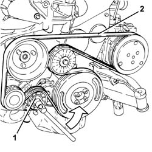
Applies to: engines: 1.9 JTD 16V; all production periods
1. Disconnect the electrical connection for the air conditioning compressor.
Name | Connector | |
|---|---|---|
1 | Air conditioning compressor engagement electro-magnet | See L20 AIR CONDITIONING COMPRESSOR ENGAGEMENT ELECTRO-MAGNET ( CONNECTORS ) |
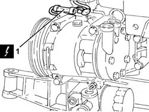
Applies to: engines: 1.9 JTD 16V; all production periods
1. Release the electrical wiring from the band on the timing cover.
2. Disconnect the electrical connection for the cam angle sensor.
Name | Connector | |
|---|---|---|
1 | Timing sensor. | See K47 TIMING SENSOR. ( CONNECTORS ) |
3. Disconnect the electrical connections from the injectors.
Name | Connector | |
|---|---|---|
3 | Injector | See N70 INJECTOR |
4. Undo the cable duct fixing bolts.
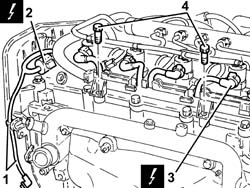
Applies to: engines: 1.9 JTD 16V; all production periods
1. Release the electrical wiring from the bands fastening it to the engine coolant supply reservoir coolant return pipe.
2. Disconnect the electrical connections from the heater plugs.
Name | Connector | |
|---|---|---|
2 | Heater plug | See A40 HEATER PLUGS (CYL. 1) |
3. Disconnect the electrical connection from the fuel pressure sensor.
Name | Connector | |
|---|---|---|
3 | Fuel pressure sensor | See K83 FUEL PRESSURE SENSOR |
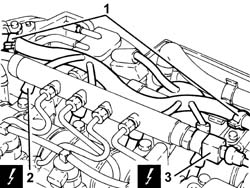
Applies to: engines: 1.9 JTD 16V; all production periods
Move the engine wiring to the side.
1. Loosen the band and disconnect the engine oil vapour recovery pipe (1a) from the engine oil filler, then release it from the retaining band (1b).
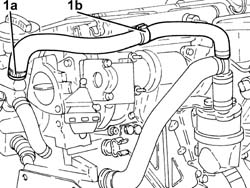
Applies to: engines: 1.9 JTD 16V; all production periods
1. Undo the bolts (1a) and remove the crankshaft pulley (1b).
2. Undo the bolt (2a) and remove the single drive belt fixed tensioner (2b).
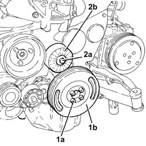
Applies to: engines: 1.9 JTD 16V; all production periods
1. Undo the bolts (1a) and remove the timing gear covers (1b).
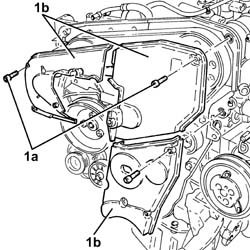
Applies to: engines: 1.9 JTD 16V; all production periods
1. Undo the bolts (1a) and remove the bracket on the engine for the reaction rod (1b).
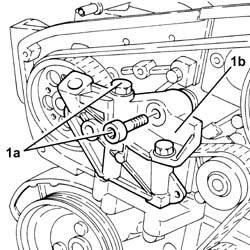
Applies to: engines: 1.9 JTD 16V; all production periods
1. Loosen the nut securing the timing belt mobile tensioner
2. Prise off and remove the timing belt.
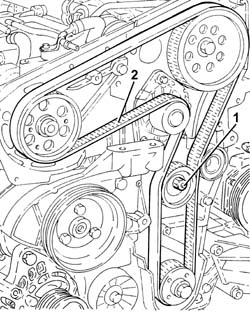
Applies to: engines: 1.9 JTD 16V; all production periods
1. Loosen the band and disconnect the coolant return pipe from the engine coolant reservoir, thermostat side.
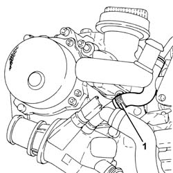
Applies to: engines: 1.9 JTD 16V; all production periods
1. Loosen the band and disconnect the coolant outlet pipe from the cylinder head, engine coolant return pipe to the coolant reservoir side.
2. Undo the bolts (2a) and remove hose (2b) carrying coolant to the coolant supply reservoir.
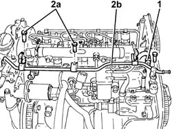
Applies to: engines: 1.9 JTD 16V; all production periods
1. Disconnect the pipe from the injectors to the fuel return manifold, fuel return manifold side.
2. Loosen the band and disconnect the pipe from the pressure pump to the fuel return manifold, fuel return manifold side.
3. Undo the bolts (3a) and remove the fuel return manifold (3b).
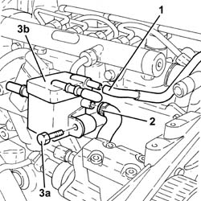
Applies to: engines: 1.9 JTD 16V; all production periods
1. Undo the connectors (1a), (1b) and remove the pipe from the pressure pump to the fuel manifold (1c).
2. Manually push springs (2a) and disconnect the pipe from the injectors to the fuel recovery manifold (2b), injectors side and remove it.
3. Undo the connectors (3a), (3b) and remove the pipes from the fuel manifold to the injectors (3c).
4. Undo the bolts (4a) and remove the single fuel manifold pipe (4b) complete with fuel pressure sensor (4c).
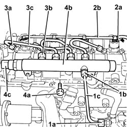
Applies to: engines: 1.9 JTD 16V; all production periods
1. Undo the nuts (1a) and remove the brackets (1b) and injectors (1c).
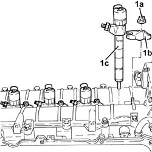
Applies to: engines: 1.9 JTD 16V; all production periods
1. Undo the bolts (1a) and remove the camshaft housing assembly (1b).
Remove the gasket.
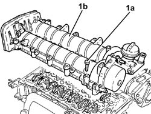
Applies to: engines: 1.9 JTD 16V; all production periods
Refitting
RemovingPlace the upper cylinder head gasket back in its housing.
1. Remove the plugs (1a) and fit the camshaft timing tools (1b) in the upper cylinder head.
 | Name | Country |
|---|---|---|
1b | Gauge | 1.870.986.900 |
Remove the inlet side camshaft timing tool and tighten the plug.
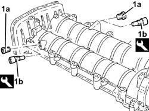
Applies to: engines: 1.9 JTD 16V; all production periods
1. Place the complete upper cylinder head (1a) back in its housing and secure it tightening the bolts (1b) to the recommended torque.
 | Fastening | Component | Ø | Value (daNm) |
|---|---|---|---|---|
1b | - | - | - | - |
Loosen the exhaust side camshaft toothed drive pulley fixing bolt.
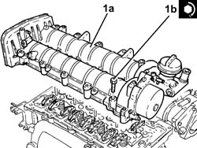
Applies to: engines: 1.9 JTD 16V; all production periods
1. Undo the bolt for the crankcase front cover shown in the diagram.
Temporarily fit the timing drive belt on the drive pulley.
2. Fit the tool (2a) and secure it gauged bolts (2b)
| Name | Country |
|---|---|---|
2a | Template | 1.860.905.000 |
| Name | Country |
|---|---|---|
2b | Calibrated screw | 1.860.905.010 |
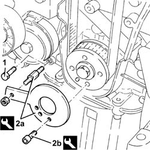
Applies to: engines: 1.9 JTD 16V; all production periods
1. Completely fit the timing belt.
2. Use a screwdriver to lever in the hole (2a) until the reference on the tensioner (2b) lines up with the reference hole (2c) and, in this position, tighten the belt tensioner nut (2d) to torque.
| Fastening | Component | Ø | Value (daNm) |
|---|---|---|---|---|
2d | - | - | - | - |
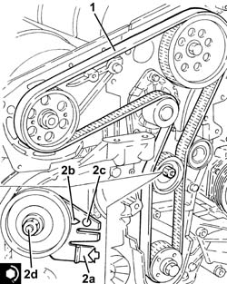
Applies to: engines: 1.9 JTD 16V; all production periods
Tighten the exhaust side camshaft toothed drive pulley fixing bolt to the recommended torque.
| Fastening | Component | Ø | Value (daNm) |
|---|---|---|---|---|
- | - | - | - | - |
Remove the timing tools.
| Name | Country |
|---|---|---|
- | Gauge | 1.870.986.900 |
| Name | Country |
|---|---|---|
- | Template | 1.860.905.000 |
| Name | Country |
|---|---|---|
- | Calibrated screw | 1.860.905.010 |
Rotate the crankshaft through two revolutions.
Check once again that the timing is correct by refitting the timing tools.
Check that the tensioning references on the timing belt tensioner are aligned.
Tighten the bolt for the crankcase front cover previously removed.
Tighten the plug in the camshaft housing for fitting the exhaust side timing tool.
1. Refit the injectors (1a) complete with brackets (1b) and secure by tightening nuts (1c) to the specified torque.
| Fastening | Component | Ø | Value (daNm) |
|---|---|---|---|---|
1c | - | - | - | - |
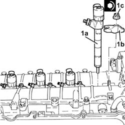
Applies to: engines: 1.9 JTD 16V; all production periods
1. Place the single fuel manifold pipe (1a), complete with fuel pressure sensor (1b), back in its housing and secure it tightening the bolts (1c) to the recommended torque.
| Fastening | Component | Ø | Value (daNm) |
|---|---|---|---|---|
1c | - | - | - | - |
2. Fit the new pipes from the fuel manifold to the injectors and secure them using the connectors without tightening them.
3. Tighten the connectors for the pipes from the fuel manifold to the injectors, injector side, to the recommended torque using a suitable spanner.
| Fastening | Component | Ø | Value (daNm) |
|---|---|---|---|---|
3 | - | - | - | - |
4. Tighten the connectors for the pipes between the fuel manifold and the injectors, fuel manifold side, to the recommended torque using a suitable spanner.
| Fastening | Component | Ø | Value (daNm) |
|---|---|---|---|---|
4 | - | - | - | - |
5. Place the pipe from the injectors to the fuel recovery manifold (5a) back in its housing and connect it to the injectors pushing it until the clips (5b) can be heard clicking into place.
6. Place the pipe from the pressure pump to the single fuel manifold back in its housing and fix it using the connectors without tightening them.
7. Tighten the connector for the pipe from the pressure pump to the single fuel manifold, pump side, to the recommended torque using a suitable spanner.
| Fastening | Component | Ø | Value (daNm) |
|---|---|---|---|---|
7 | - | - | - | - |
8. Tighten the connector for the pipe from the pressure pump to the single fuel manifold, fuel manifold side, to the recommended torque using a suitable spanner.
| Fastening | Component | Ø | Value (daNm) |
|---|---|---|---|---|
8 | - | - | - | - |
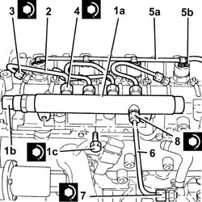
Applies to: engines: 1.9 JTD 16V; all production periods
Place the fuel return manifold pipe back in its housing and fix it using the bolts.
Connect the pipe from the pressure pump to the fuel return manifold, fuel return manifold side and tighten the band.
Connect the pipe from the injectors to the fuel return manifold, fuel return manifold side.
Place the coolant return pipe to the engine cooling system reservoir back in its housing and tighten the bolts.
Connect the coolant oulet pipe from the cylinder head, engine coolant return pipe to the supply reservoir side and tighten the band.
Connect the engine coolant return pipe to the supply reservoir, thermostat side and tighten the band.
1. Fit the bracket on the engine for the reaction rod (1a) and fix it tightening the bolts (1b) and (1c) to the recommended torque.
| Fastening | Component | Ø | Value (daNm) |
|---|---|---|---|---|
1b | - | - | - | - |
| Fastening | Component | Ø | Value (daNm) |
|---|---|---|---|---|
1b | - | - | - | - |
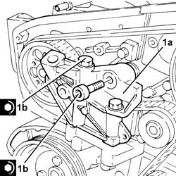
Applies to: engines: 1.9 JTD 16V; all production periods
Place the protective timing side covers back in their housings and secure them using the bolts.
1. Place the engine components single drive belt fixed tensioner (1a) back in its housing and fix it tightening the bolt (1b) to the recommended torque.
| Fastening | Component | Ø | Value (daNm) |
|---|---|---|---|---|
1b | - | - | - | - |
Fit the flywheel lock.
| Name | Country |
|---|---|---|
- | Counter-torque | 1.860.846.001 |
2. Place the crankshaft pulley (2a) back in its housing and secure it by tightening bolts (2b) to the recommended torque.
| Fastening | Component | Ø | Value (daNm) |
|---|---|---|---|---|
2b | - | - | - | - |
Remove the flywheel lock.
| Name | Country |
|---|---|---|
- | Counter-torque | 1.860.846.001 |
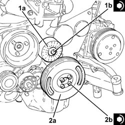
Applies to: engines: 1.9 JTD 16V; all production periods
Connect the oil vapour recovery pipe to the engine oil filler, tighten the band and secure it using the fastening.
Place the engine wiring back in its housing.
Connect the electrical connection to the fuel pressure sensor.
Connect the electrical connections to the heater plugs.
Fasten the electrical wiring to the bands on the coolant return pipe to the engine coolant supply reservoir.
Tighten the cable duct fixing bolts.
Connect the electrical connections to the injectors.
Connect the electrical connection to the cam angle sensor
Fasten the electrical wiring to the band on the timing cover.
Connect the electrical connection to the air conditioner compressor.
Fit the single engine component belt by adjusting the moving tensioner using a wrench.